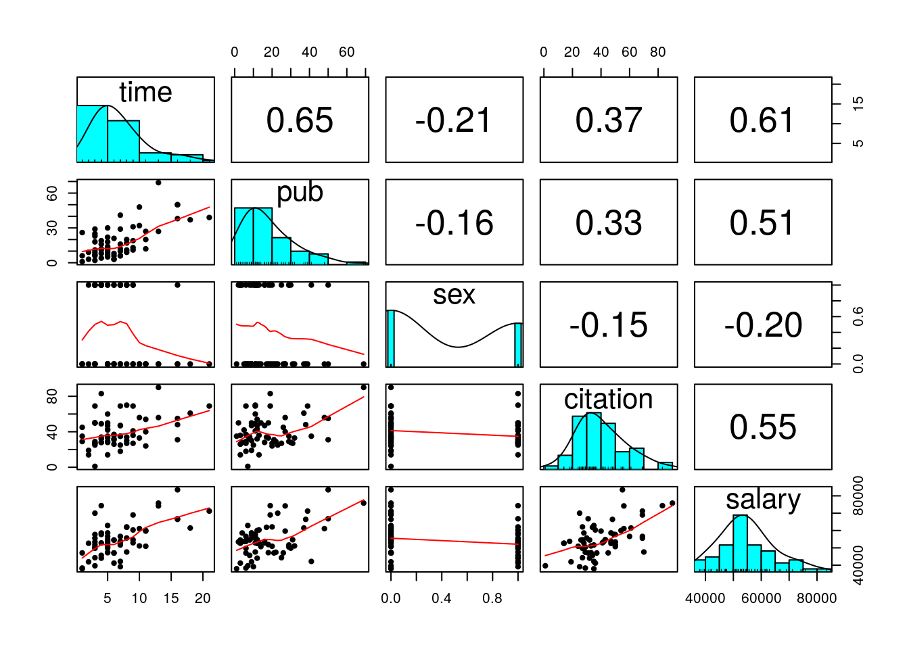
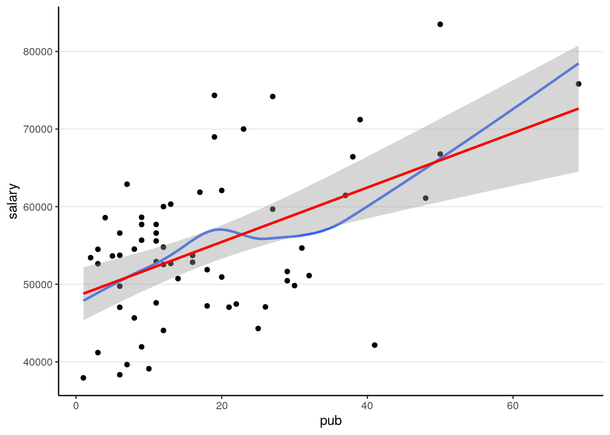
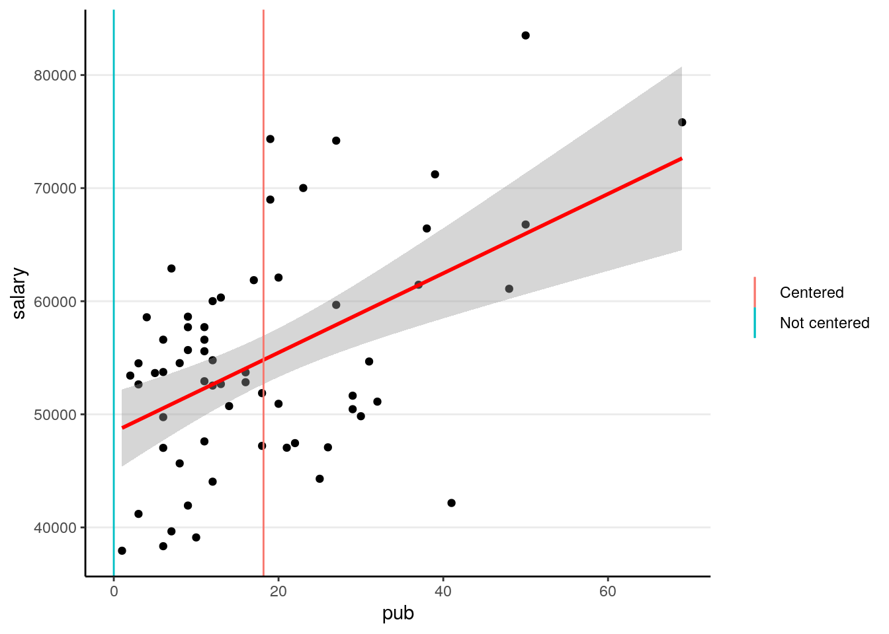
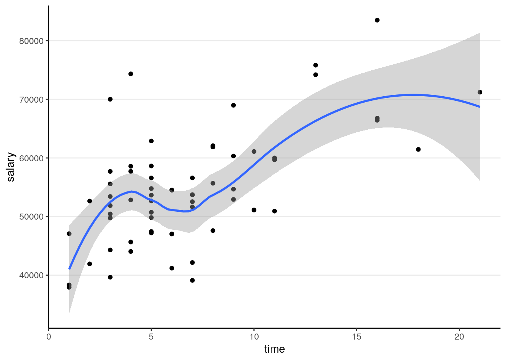
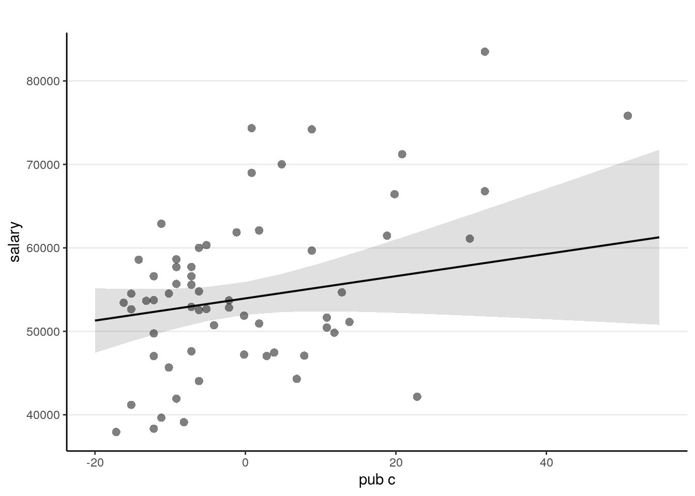
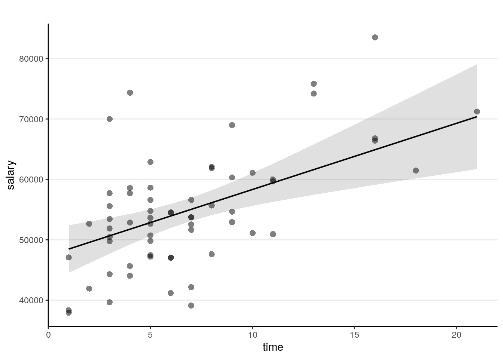
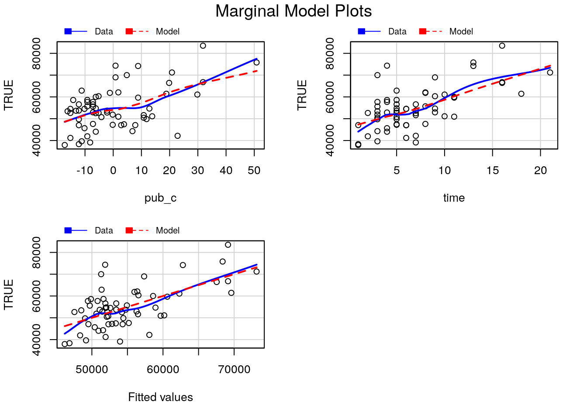
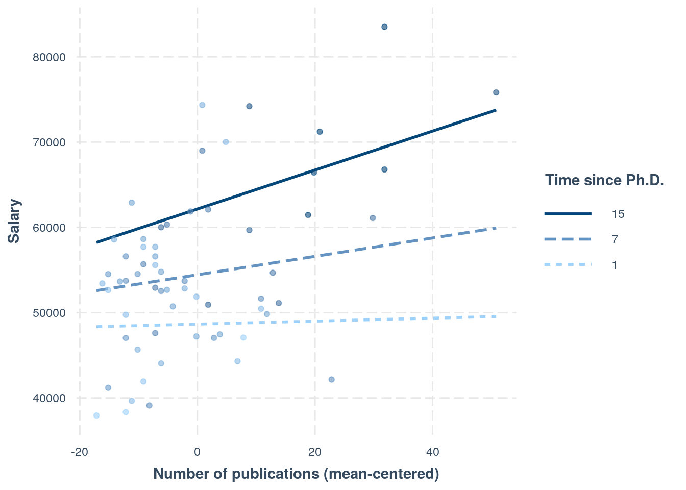

# To install a package, run the following ONCE (and only once on your computer)
# install.packages("psych")
library(psych, include.only = "pairs.panels") # for scatterplot matrix
library(here) # makes reading data more consistent
library(tidyverse) # for data manipulation and plotting
library(car) # some useful functions for regression
library(modelsummary) # for making tables
library(sjPlot) # for plotting slopes
library(interactions) # for plotting interactionsR Codes (Refresher)
Click here to download the Rmd file: week1b-review-regression.Rmd
Load Packages and Import Data
You can use add the message = FALSE option to suppress the package loading messages
Import Data
First, download the data file salary.txt from https://raw.githubusercontent.com/marklhc/marklai-pages/master/data_files/salary.txt, and import the data. A robust way to do so is to download the data to a folder called data_files under the project directory, and then use the here package. This avoids a lot of data import issues that I’ve seen.
# The `here()` function forces the use of the project directory
here("data_files", "salary.txt")
# Read in the data
salary_dat <- read.table(here("data_files", "salary.txt"), header = TRUE)Alternatively, from the menu, click File → Import Dataset → From Text (base)..., and select the file.
# Show the data
salary_datYou can see the description of the variables here: https://rdrr.io/cran/MBESS/man/prof.salary.html
Quick Scatterplot Matrix
Import to screen your data before any statistical modeling
pairs.panels(salary_dat[, -1], # not plotting the first column
ellipses = FALSE
)
1. Linear Regression of salary on pub
Visualize the data
# Visualize the data ("gg" stands for grammar of graphics)
p1 <- ggplot(
salary_dat, # specify data
# aesthetics: mapping variable to axes)
aes(x = pub, y = salary)
) +
# geom: geometric objects, such as points, lines, shapes, etc
geom_point()
# Add a smoother geom to visualize mean salary as a function of pub
p1 + geom_smooth()># `geom_smooth()` using method = 'loess' and formula 'y ~ x'
A little bit of non-linearity on the plot. Now fit the regression model
Linear regression
You can type equations (with LaTeX; see a quick reference).
P.S. Use \text{} to specify variable names
P.S. Pay attention to the subscripts
\[\text{salary}_i = \beta_0 + \beta_1 \text{pub}_i + e_i\]
- Outcome:
salary - Predictor:
pub - \(\beta_0\): regression intercept
- \(\beta_1\): regression slope
- \(e\): error
# left hand side of ~ is outcome; right hand side contains predictors
# salary ~ (beta_0) * 1 + (beta_1) * pub
# remove beta_0 and beta_1 to get the formula
m1 <- lm(salary ~ 1 + pub, data = salary_dat)
# In R, the output is not printed out if it is saved to an object (e.g., m1).
# Summary:
summary(m1)>#
># Call:
># lm(formula = salary ~ 1 + pub, data = salary_dat)
>#
># Residuals:
># Min 1Q Median 3Q Max
># -20660.0 -7397.5 333.7 5313.9 19238.7
>#
># Coefficients:
># Estimate Std. Error t value Pr(>|t|)
># (Intercept) 48439.09 1765.42 27.438 < 2e-16 ***
># pub 350.80 77.17 4.546 2.71e-05 ***
># ---
># Signif. codes: 0 '***' 0.001 '**' 0.01 '*' 0.05 '.' 0.1 ' ' 1
>#
># Residual standard error: 8440 on 60 degrees of freedom
># Multiple R-squared: 0.2562, Adjusted R-squared: 0.2438
># F-statistic: 20.67 on 1 and 60 DF, p-value: 2.706e-05Visualize fitted regression line:
p1 +
# Non-parametric fit
geom_smooth(se = FALSE) +
# Linear regression line (in red)
geom_smooth(method = "lm", col = "red")># `geom_smooth()` using method = 'loess' and formula 'y ~ x'># `geom_smooth()` using formula 'y ~ x'
Confidence intervals
# Confidence intervals
confint(m1)># 2.5 % 97.5 %
># (Intercept) 44907.729 51970.4450
># pub 196.441 505.1625Interpretations
Based on our model, faculty with one more publication have predicted salary of $350.8, 95% CI [$196.4, $505.2], higher than those with one less publication.
But what do the confidence intervals and the standard errors mean? To understanding what exactly a regression model is, let’s run some simulations.
Centering
So that the intercept refers to a more meaningful value. It’s a major issue in multilevel modeling.
\[\text{salary}_i = \beta_0 + \beta_1 \text{pub}^c_i + e_i\]
# Using pipe operator
salary_dat <- salary_dat %>%
mutate(pub_c = pub - mean(pub))
# Equivalent to:
# salary_dat <- mutate(salary_dat,
# pub_c = pub - mean(pub))
m1c <- lm(salary ~ pub_c, data = salary_dat)
summary(m1c)>#
># Call:
># lm(formula = salary ~ pub_c, data = salary_dat)
>#
># Residuals:
># Min 1Q Median 3Q Max
># -20660.0 -7397.5 333.7 5313.9 19238.7
>#
># Coefficients:
># Estimate Std. Error t value Pr(>|t|)
># (Intercept) 54815.76 1071.93 51.137 < 2e-16 ***
># pub_c 350.80 77.17 4.546 2.71e-05 ***
># ---
># Signif. codes: 0 '***' 0.001 '**' 0.01 '*' 0.05 '.' 0.1 ' ' 1
>#
># Residual standard error: 8440 on 60 degrees of freedom
># Multiple R-squared: 0.2562, Adjusted R-squared: 0.2438
># F-statistic: 20.67 on 1 and 60 DF, p-value: 2.706e-05The only change is the intercept coefficient
p1 +
geom_smooth(method = "lm", col = "red") +
# Intercept without centering
geom_vline(aes(col = "Not centered", xintercept = 0)) +
# Intercept with centering
geom_vline(aes(col = "Centered", xintercept = mean(salary_dat$pub))) +
labs(col = "")># `geom_smooth()` using formula 'y ~ x'
2. Categorical Predictor
Recode sex as factor variable in R (which allows R to automatically do dummy coding). This should be done in general for categorical predictors.
salary_dat <- salary_dat %>%
mutate(sex = factor(sex,
levels = c(0, 1),
labels = c("male", "female")
))\[\text{salary}_i = \beta_0 + \beta_1 \text{sex}_i + e_i\]
(p2 <- ggplot(salary_dat, aes(x = sex, y = salary)) +
geom_boxplot() +
geom_jitter(height = 0, width = 0.1)) # move the points to left/right a bit
m2 <- lm(salary ~ sex, data = salary_dat)
summary(m2)>#
># Call:
># lm(formula = salary ~ sex, data = salary_dat)
>#
># Residuals:
># Min 1Q Median 3Q Max
># -18576 -5736 -19 4853 26988
>#
># Coefficients:
># Estimate Std. Error t value Pr(>|t|)
># (Intercept) 56515 1620 34.875 <2e-16 ***
># sexfemale -3902 2456 -1.589 0.117
># ---
># Signif. codes: 0 '***' 0.001 '**' 0.01 '*' 0.05 '.' 0.1 ' ' 1
>#
># Residual standard error: 9587 on 60 degrees of freedom
># Multiple R-squared: 0.04039, Adjusted R-squared: 0.02439
># F-statistic: 2.525 on 1 and 60 DF, p-value: 0.1173The (Intercept) coefficient is for the ‘0’ category, i.e., predicted salary for males; the female coefficient is the difference between males and females.
Predicted female salary = 56515 + (-3902) = 52613.
Equivalence to the \(t\)-test
When assuming homogeneity of variance
t.test(salary ~ sex, data = salary_dat, var.equal = TRUE)>#
># Two Sample t-test
>#
># data: salary by sex
># t = 1.5891, df = 60, p-value = 0.1173
># alternative hypothesis: true difference in means between group male and group female is not equal to 0
># 95 percent confidence interval:
># -1009.853 8814.041
># sample estimates:
># mean in group male mean in group female
># 56515.06 52612.963. Multiple Predictors (Multiple Regression)
Now add one more predictor, time
\[\text{salary}_i = \beta_0 + \beta_1 \text{pub}^c_i + \beta_2 \text{time}_i + e_i\]
ggplot(salary_dat, aes(x = time, y = salary)) +
geom_point() +
geom_smooth()># `geom_smooth()` using method = 'loess' and formula 'y ~ x'
m3 <- lm(salary ~ pub_c + time, data = salary_dat)
summary(m3) # summary>#
># Call:
># lm(formula = salary ~ pub_c + time, data = salary_dat)
>#
># Residuals:
># Min 1Q Median 3Q Max
># -15919 -5537 -985 4861 22476
>#
># Coefficients:
># Estimate Std. Error t value Pr(>|t|)
># (Intercept) 47373.38 2281.78 20.762 < 2e-16 ***
># pub_c 133.00 92.73 1.434 0.156797
># time 1096.03 303.58 3.610 0.000632 ***
># ---
># Signif. codes: 0 '***' 0.001 '**' 0.01 '*' 0.05 '.' 0.1 ' ' 1
>#
># Residual standard error: 7703 on 59 degrees of freedom
># Multiple R-squared: 0.3908, Adjusted R-squared: 0.3701
># F-statistic: 18.92 on 2 and 59 DF, p-value: 4.476e-07confint(m3) # confidence interval># 2.5 % 97.5 %
># (Intercept) 42807.55413 51939.2044
># pub_c -52.56216 318.5589
># time 488.56251 1703.4921The regression coefficients are the partial effects.

Plotting
The sjPlot::plot_model() function is handy
sjPlot::plot_model(m3,
type = "pred", show.data = TRUE,
title = "" # remove title
)># $pub_c
>#
># $time
Interpretations
Faculty who have worked longer tended to have more publications For faculty who graduate around the same time, a difference of 1 publication is associated with an estimated difference in salary of $133.0, 95% CI [$-52.6, $318.6], which was not significant.
Diagnostics
car::mmps(m3) # marginal model plots for linearity assumptions
The red line is the implied association based on the model, whereas the blue line is a non-parametric smoother not based on the model. If the two lines show big discrepancies (especially if in the middle), it may suggest the linearity assumptions in the model does not hold.
Effect size
# Extract the R^2 number (it's sometimes tricky to
# figure out whether R stores the numbers you need)
summary(m3)$r.squared># [1] 0.3907761# Adjusted R^2
summary(m3)$adj.r.squared># [1] 0.3701244Proportion of predicted variance: \(R^2\) = 39%, adj. \(R^2\) = 37%.
4. Interaction
For interpretation purposes, it’s recommended to center the predictors (at least the continuous ones)
\[\text{salary}_i = \beta_0 + \beta_1 \text{pub}^c_i + \beta_2 \text{time}^c_i + \beta_3 (\text{pub}^c_i)(\text{time}^c_i) + e_i\]
salary_dat <- salary_dat %>%
mutate(time_c = time - mean(time))
# Fit the model with interactions:
m4 <- lm(salary ~ pub_c * time_c, data = salary_dat)
summary(m4) # summary>#
># Call:
># lm(formula = salary ~ pub_c * time_c, data = salary_dat)
>#
># Residuals:
># Min 1Q Median 3Q Max
># -14740 -5305 -373 4385 22744
>#
># Coefficients:
># Estimate Std. Error t value Pr(>|t|)
># (Intercept) 54238.08 1183.01 45.847 < 2e-16 ***
># pub_c 104.72 98.41 1.064 0.29169
># time_c 964.17 339.68 2.838 0.00624 **
># pub_c:time_c 15.07 17.27 0.872 0.38664
># ---
># Signif. codes: 0 '***' 0.001 '**' 0.01 '*' 0.05 '.' 0.1 ' ' 1
>#
># Residual standard error: 7719 on 58 degrees of freedom
># Multiple R-squared: 0.3987, Adjusted R-squared: 0.3676
># F-statistic: 12.82 on 3 and 58 DF, p-value: 1.565e-06Interaction Plots
Interpreting interaction effects is hard. Therefore,
Always plot the interaction to understand the dynamics
interactions::interact_plot(m4,
pred = "pub_c",
modx = "time_c",
# Insert specific values to plot the slopes.
# Pay attention that `time_c` has been centered
modx.values = c(1, 7, 15) - 6.79,
modx.labels = c(1, 7, 15),
plot.points = TRUE,
x.label = "Number of publications (mean-centered)",
y.label = "Salary",
legend.main = "Time since Ph.D."
)
Another approach is to plug in numbers to the equation:
\[\widehat{\text{salary}} = \hat \beta_0 + \hat \beta_1 \text{pub}^c + \hat \beta_2 \text{time}^c + \hat \beta_3 (\text{pub}^c)(\text{time}^c)\]
For example, consider people who’ve graduated for seven years, i.e., time = 7. First, be careful that in the model we have time_c, and time = 7 corresponds to time_c = 0.2096774 years. So if we plug that into the equation,
\[\widehat{\text{salary}} |_{\text{time} = 7} = \hat \beta_0 + \hat \beta_1 \text{pub}^c + \hat \beta_2 (0.21) + \hat \beta_3 (\text{pub}^c)(0.21)\]
Combining terms with pubc,
\[\widehat{\text{salary}} |_{\text{time} = 7} = [\hat \beta_0 + \hat \beta_2 (0.21)] + [\hat \beta_1 + \hat \beta_3 (0.21)] (\text{pub}^c)\]
Now plug in the numbers for \(\hat \beta_0\), \(\hat \beta_1\), \(\hat \beta_2\), \(\hat \beta_3\),
# beta0 + beta2 * 0.21
54238.08 + 964.17 * 0.21># [1] 54440.56# beta1 + beta3 * 0.21
104.72 + 15.07 * 0.21># [1] 107.8847resulting in
\[\widehat{\text{salary}} |_{\text{time} = 7} = 54440.6 + 107.9 (\text{pub}^c), \]
which is the regression line for time = 7. Note, however, when an interaction is present, the regression slope will be different with a different value of time. So remember that
An interaction means that the regression slope of a predictor depends on another predictor.
We will further explore this in the class exercise this week.
5. Tabulate the Regression Results
msummary(list(
"M1" = m1,
"M2" = m2,
"M3" = m3,
"M3 + Interaction" = m4
),
fmt = "%.1f" # keep one digit
)| M1 | M2 | M3 | M3 + Interaction | |
|---|---|---|---|---|
| (Intercept) | 48439.1 | 56515.1 | 47373.4 | 54238.1 |
| (1765.4) | (1620.5) | (2281.8) | (1183.0) | |
| pub | 350.8 | |||
| (77.2) | ||||
| sexfemale | −3902.1 | |||
| (2455.6) | ||||
| pub_c | 133.0 | 104.7 | ||
| (92.7) | (98.4) | |||
| time | 1096.0 | |||
| (303.6) | ||||
| time_c | 964.2 | |||
| (339.7) | ||||
| pub_c × time_c | 15.1 | |||
| (17.3) | ||||
| Num.Obs. | 62 | 62 | 62 | 62 |
| R2 | 0.256 | 0.040 | 0.391 | 0.399 |
| R2 Adj. | 0.244 | 0.024 | 0.370 | 0.368 |
| AIC | 1301.0 | 1316.8 | 1290.6 | 1291.8 |
| BIC | 1307.4 | 1323.1 | 1299.1 | 1302.4 |
| Log.Lik. | −647.486 | −655.383 | −641.299 | −640.895 |
| RMSE | 8303.15 | 9431.02 | 7514.48 | 7465.67 |
Bonus: Matrix Form of Regression
The regression model can be represented more succintly in matrix form:
\[\mathbf y = \mathbf X \boldsymbol \beta + \mathbf e,\]
where \(\mathbf y\) is a column vector (which can be considered a \(N \times 1\) matrix). For example, for our data
head(salary_dat)So
\[\mathbf y = \begin{bmatrix} 51,876 \\ 54,511 \\ 53,425 \\ \vdots \end{bmatrix}\] \(\mathbf X\) is the predictor matrix (sometimes also called the design matrix), where the first column is the constant 1, and each subsequent column represent a predictor. You can see this in R
head(
model.matrix(m3)
)># (Intercept) pub_c time
># 1 1 -0.1774194 3
># 2 1 -15.1774194 6
># 3 1 -16.1774194 3
># 4 1 -1.1774194 8
># 5 1 -7.1774194 9
># 6 1 -12.1774194 6The coefficient \(\boldsymbol \beta\) is a vector, with elements \(\beta_0, \beta_1, \ldots\). The least square estimation method is used to find estimates of \(\beta\) that minimizes the sum of squared differences between \(\mathbf y\) and \(\mathbf X \hat{\boldsymbol \beta}\), which can be written as
\[(\mathbf y - \mathbf X \boldsymbol \beta)^\top(\mathbf y - \mathbf X \boldsymbol \beta).\]
The above means that: for each value observation, subtract the predicted value of \(y\) from the observed \(y\) (i.e., \(y_i - \beta_0 + \beta_1 x_{1i} + \ldots\)), then squared the value (\([y_i - \beta_0 + \beta_1 x_{1i} + \ldots]^2\)), then sum these squared values across observations. Or sometimes you’ll see it written as
\[\lVert\mathbf y - \mathbf X \boldsymbol \beta\rVert^2\]
It can be shown that the least square estimates can be obtained as
\[(\mathbf X^\top \mathbf X)^{-1} \mathbf X^\top \mathbf y\]
You can do the matrix form in R:
y <- salary_dat$salary
X <- model.matrix(m3)
# beta = (X'X)^{-1} X'y
# solve() is matrix inverse; t(X) is the transpose of X; use `%*%` for matrix multiplication
(betahat <- solve(t(X) %*% X, t(X) %*% y)) # same as the coefficients in m3># [,1]
># (Intercept) 47373.3792
># pub_c 132.9984
># time 1096.0273# Sum of squared residual
sum((y - X %*% betahat)^2)># [1] 3500978295# Root mean squared residual (Residual standard error)
sqrt(sum((y - X %*% betahat)^2) / 59) # same as in R># [1] 7703.156Bonus: More Options in Formatting Tables
Here’s some code you can explore to make the table output from msummary() to look more lik APA style (with an example here: https://apastyle.apa.org/style-grammar-guidelines/tables-figures/sample-tables#regression). However, for this course I don’t recommend spending too much time on tailoring the tables; something clear and readable will be good enough.
# Show confidence intervals and p values
msummary(
list(
"Estimate" = m4,
"95% CI" = m4,
"p" = m4
),
estimate = c("estimate", "[{conf.low}, {conf.high}]", "p.value"),
statistic = NULL,
# suppress gof indices (e.g., R^2)
gof_omit = ".*",
# Rename the model terms ("current name" = "new name")
coef_rename = c(
"(Intercept)" = "Intercept",
"pub_c" = "Number of publications",
"time_c" = "Time since PhD",
"pub_c:time_c" = "Publications x Time"
)
)| Estimate | 95% CI | p | |
|---|---|---|---|
| Intercept | 54238.084 | [51870.023, 56606.145] | 0.000 |
| Number of publications | 104.724 | [−92.273, 301.720] | 0.292 |
| Time since PhD | 964.170 | [284.218, 1644.122] | 0.006 |
| Publications x Time | 15.066 | [−19.506, 49.637] | 0.387 |